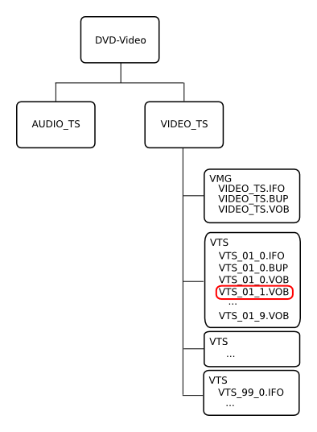
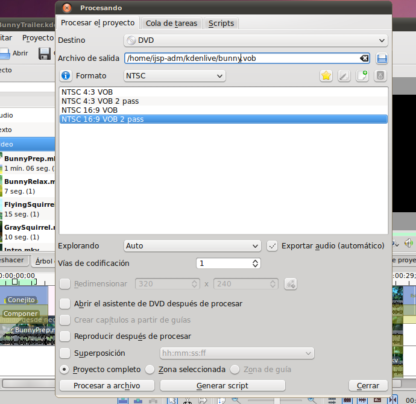
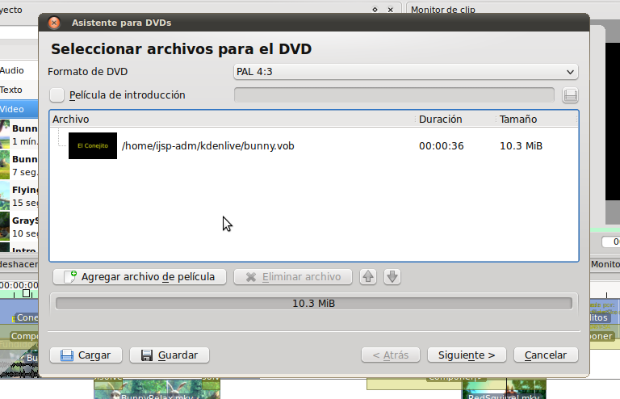
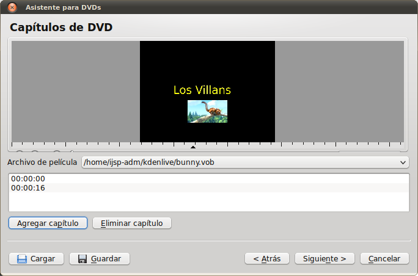
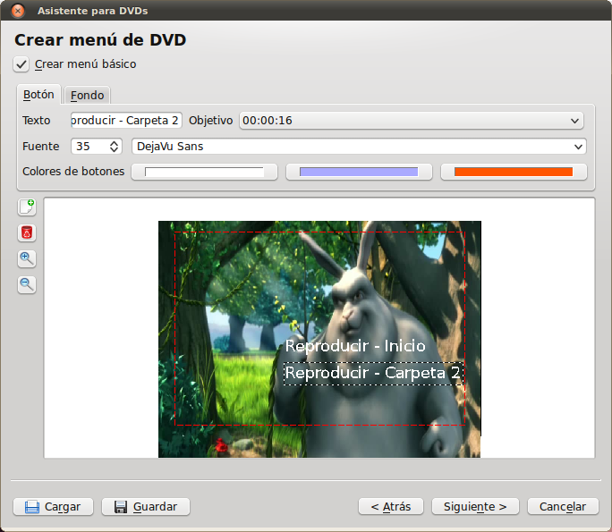
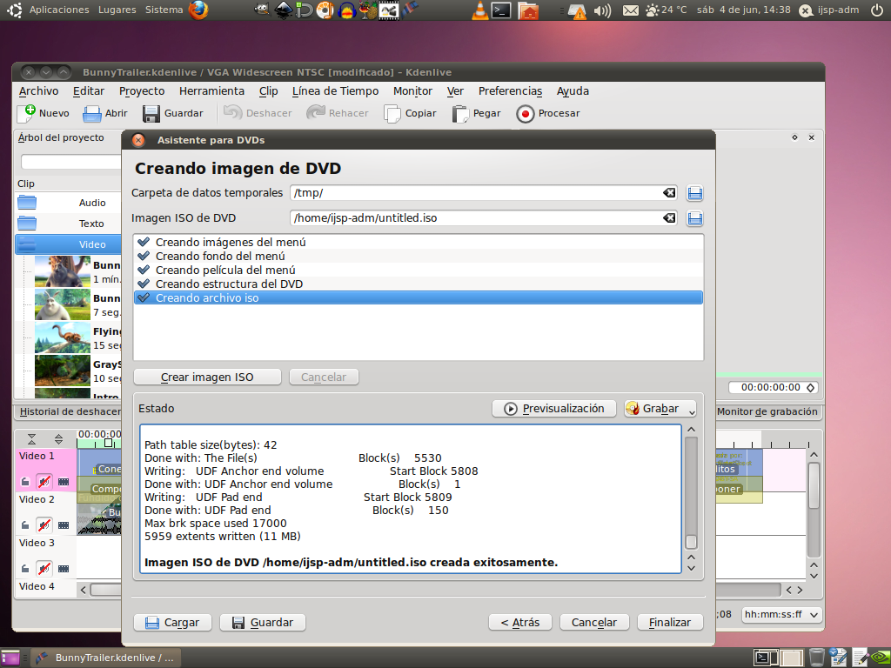

DVD Creation
Even though the DVD is twenty years old, and has been largely surpassed
by newer technology (BluRay, and then online video) it is still a very
common format. There are many players on the market and in homes that
can play a DVD.
Just like an Audio CD is a special format (not simply audio files
copied onto a CD), a DVD is also a special format. There are a
few players that will play movies that have simply been copied onto a
DVD, but there are many that require it to be in the special
"DVD-Video" format. This format consists of a special DVD-Video
container that wraps video encoded with the MPEG2 codec. One or
more video files may be stored on the DVD, each in its own .VOB file.
The DVD-Video format also allows for things such as menus, titles,
chapters, optional subtitles, optional audio tracks, and alternate
video tracks. The .IFO (and the backup of the .IFO called the
.BUP) is used to store the data (time codes, options, etc.) for all
these different features. Below is the layout of a standard DVD-Video
container.

The .VOB file that is circled in red is the first .VOB file that will
usually contain the video. The .VOB file immediately above it
(VTS_01_0.VOB will usually contain a menu). The VMG stands for
Video ManaGer and the VTS stands for Video Title Set. All these
files are within the VIDEO_TS directory on the disk. The AUDIO_TS
directory isn't used with the DVD-Video format, it is only for high
definition audio discs.
Most commercial DVDs come with a form of encryption built in to them.
This system usually goes by the name CSS (Content Scrambling System)
and prevents you from being able to copy video on the DVD to your
computer without a special decoder. These decoders are widely
available, but are illegal to operate in some countries. However,
when you create your own DVDs there is no reason to apply CSS to
them. Since there are many decoders available, it won't stop
people from copying your video, but for the videos you create with this
course, you probably don't want to stop them anyway.
Kdenlive Vob Creation
Making the VOB file to put on your DVD is easy in Kdenlive. Lets
start by opening the project we created with the bunny in it.
Then, go to render the video. Here, instead of choosing a file render,
choose DVD from the drop down menu. You'll need to chose one of the
16:9 rendering options for this video (I'd recommend 2-pass).
Give your vob a name (don't worry about the VTS stuff now) and render
it.

Kdenlive DVD Building
Once you're file has finished rendering, we're going to start
Kdenlive's DVD Wizard from the Archivo -> Asistente para DVDs menu. Here we need
to select the same options we just rendered our VOB as (NTSC 16:9) and
then click the Add Movie button to find our VOB and add it.

Now we can go to the next page in the wizard and add chapters to our
movie. Since ours is short, we'll just add one chapter. Use the
navigation tools to go to the spot in the video where "the villans"
first shows up, and click the add chapter button.

Now we can hit the next button to move on.
Here we can make the menu for our movie. You can create and modify
"buttons" which the viewer can access with his/her remote control, and
have them do different things which you can select from the drop
down. You can also use the background tab to add a movie or image
background. (If you want an image from the movie, avidemux will
save individual frames as JPEG files for you.)

When you're happy with the menu, hit the next button.
Now you're all set to make your DVD image. This will create a .iso
file, which you can use DVD burning software to write to a DVD
disc. Just name your ISO and hit the Create ISO image button.

That's it, just take that ISO image and burn it to a DVD, then try it
out in any DVD player.
Other Tools
The DVD creation tools in Kdenlive are rather limited. For most simple
projects, its great, however it is difficult to make more than one menu
and do fancy things like multiple audio tracks, or optional subtitles.
There are some other tools that will allow you to create simple DVDs
with just video files on them (no menus or other features):
Brasero - the same tool we used for Audio CD creation (and data
CDs/DVDs)
K3b - Similar to Brasero, but requires existing VOB files
DeVeDe - Import lots of types of media files that automatically get
encoded for DVD
Then there are some more advanced tools that allow you to make multiple
menus and various other features:
QDVDAuthor - Lots of
features and quite powerful.
Bombono DVD - Easily
drag around video clips to build your DVD
DVD Styler - Really good for
working with menus.